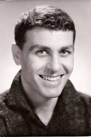

Апостол Карамитев
Апостол Карамитев е роден на 17 октомври 1923 г. в Бургас, а в София се премества за да учи право, след като завършва италианската гимназия. Въпреки това, скоро избира да се занимава с театър.Завършва ВИТИЗ „Кръстьо Сарафов“ през 1951 г. със специалност актьорско майсторствo. Дълги години е сред водещите актьори на Народния театър „Иван Вазов“, където създава поредица от забележителни роли. Сред тях е Ромео в „Ромео и Жулиета“ на Уилям Шекспир. Жени се за актрисата Маргарита Дупаринова, с която имат син и дъщеря, също актьори – Момчил Карамитев и Маргарита Карамитева. Неговият дебют в киното е във филма „Утро над родината“. От 1969 г. до смъртта си е доцент и преподавател по специалностите „актьорско за драматичен театър“ и „режисура за драматичен театър“ във ВИТИЗ. През 1971 г. Карамитев озвучава всичките образи (мъжки и женски) в дублажа на английския сериал „Сага за Форсайтови“. След две-три години стана първата българска звезда. С всички плюсове и минуси на това звание.“Карамитев почива преди да завършат снимките на филма Сватбите на Йоан Асен през 1973 г. от рак на черния дроб. На негово име е кръстен драматичният театър в Димитровград.